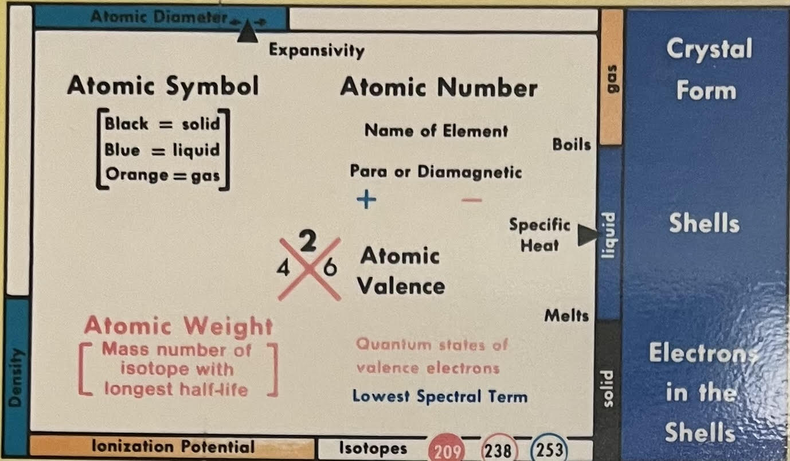

The Periodic Table At Granny's House

The periodic table displayed at Granny's House is different than the "typical" periodic table that we are used to seeing for two reasons:
- It is organized differently
- It contains a lot more information
Organization
The typical periodic table is in a grid of rows (called periods) and columns (called groups). However, there are multiple other ways to
show the periodic table. (See this video about 5 other ways to show the periodic table.) This periodic table at Granny's
House organizes the elements
Additional Information

This box of the periodic table provides the key to what information is shown on the table.